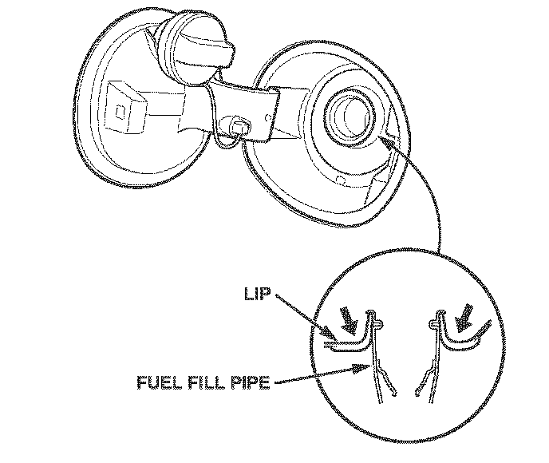

Body - Fuel Filler Door Won't Open
07-058November 28, 2007
Applies To:
2007 MDX - ALL
Fuel Fill Door Won't Open
SYMPTOM
The fuel fill door won't open in freezing weather conditions.
PROBABLE CAUSE
Snow or water enters the fuel fill door assembly and freezes.
CORRECTIVE ACTION
Replace the fuel fill door/adapter.
TOOL INFORMATION
KTC Trim Tool Set: T/N SOJATP2014
Available through the Acura Tool and Equipment Program; call.
PARTS INFORMATION
Fuel Fill Adapter: P/N 74480-STX-A02
Premium Unleaded Fuel Only Label:
P/N 17669-SL0-A00
WARRANTY CLAIM INFORMATION
In warranty:
The normal warranty applies.
Operation Number: 3101D3
Flat Rate Time: 1.0 hour
Failed Part: P/N 74480-STX-A01
Defect Code: 01601
Symptom Code: 07902
Template ID: 07-058A
Skill Level: Repair Technician
Out of warranty:
Any repair performed after warranty expiration may be eligible for goodwill consideration by the District Parts and Service Manager or your Zone Office. You must request consideration, and get a decision, before starting work.
REPAIR PROCEDURE
1. Remove the fuel fill door/adapter:
^ Refer to page 20-207 of the 2007-2008 MDX Service Manual, or
^ Online, enter keywords FILL DOOR, and select Fuel Fill Door/Adapter Replacement from the list.
2. Remove the fuel fill door:
^ Refer to page 20-208 of the service manual, or
^ Online, enter keywords FILL DOOR, and select Fuel Fill Door Replacement from the list.
3. Install the old fuel fill door onto the new adapter.
4. Apply the new Premium Unleaded Fuel Only label to the new adapter.

5. Install the new adapter onto the vehicle in the reverse order of removal. Make sure the adapter lip is fully seated on the fuel fill pipe.
6. Check the fuel fill door for proper operation.

Disclaimer